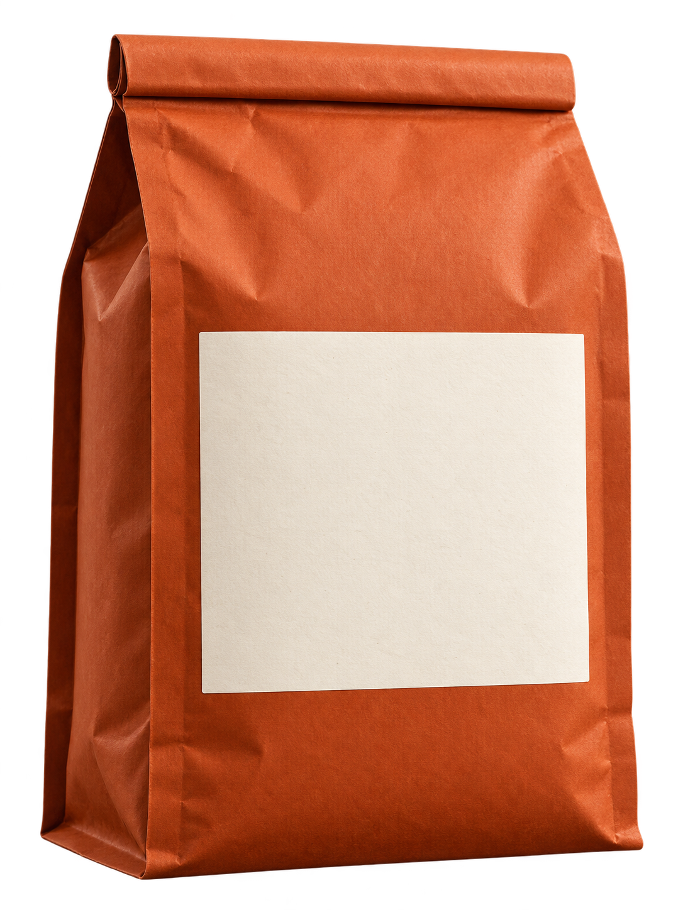

SMALL BATCH. BIG WORLD.每月一站 / 产地订阅计划
每一袋，
都有来处。
山的海拔，雨的节奏，人的耐心。
把一片土地的性格，冲进日常。
200g 精品咖啡豆
随袋附一份产地手记
随袋附一份产地手记
FRESHLY ROASTED.
CURIOUSLY SOURCED.
CURIOUSLY SOURCED.

ORIGIN
CLUB.ETH
CLUB.ETH
SINGLE ORIGIN / 单一产地
ETHIOPIA
SIDAMA / 西达摩
TASTING NOTES / 风味茉莉 · 柑橘 · 蜂蜜
浅度烘焙 / 水洗处理200g
本袋烘焙 / ROAST PROFILE浅度烘焙 / 水洗处理
FROM THERE,
TO HERE.远方的风味，
TO HERE.
远方的风味，
离你只有一袋。
- 01 / CHOOSE选一站产地。
从花香、甜感到坚果香，
找到今天想喝的那一杯。 - 02 / OPEN打开新鲜。
一袋 200g 咖啡豆，
和一份关于风土的手记。 - 03 / BREW把它变成日常。
磨豆、注水，留一点时间。
让每一次冲煮都有新发现。